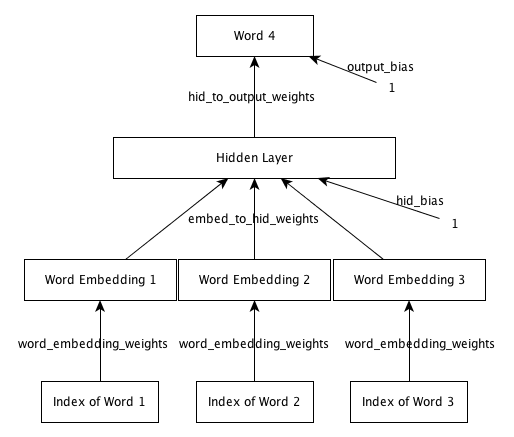

We are now ready to start using neural nets for solving real problems!
In this assignment we will design a neural net language model. The model will learn to predict the next word given the previous three words. The network looks like this:

To get started, download any one of the following archives. assignment2.tar.gz assignment2.zip
The starter code implements a basic framework for training neural nets with mini-batch gradient descent. Your job is to write code to complete the implementation of forward and back propagation. See the README file for a description of the dataset, starter code and how to run it.
sample_output shows you what output to expect once everything is implemented correctly.
Question 1
Train a model with 50 dimensional embedding space, 200 dimensional hidden layer and default setting of all other hyperparameters. What is average training set cross entropy as reported by the training program after 10 epochs ? Please provide a numeric answer (three decimal places). [4 points]
Answer for Question 1
Question 2
Train a model for 10 epochs with a 50 dimensional embedding space, 200 dimensional hidden layer, a learning rate of 0.0001 and default setting of all other hyperparameters. What do you observe ? [3 points]
Question 3
If all weights and biases in this network were set to zero and no training was performed, what will be the average cross entropy on the validation set ? Please provide a numeric answer (three decimal places). [3 points]
Answer for Question 3
Question 4
Train three models each with 50 dimensional embedding space, 200 dimensional hidden layer.
Model A: Learning rate = 0.001,
Model B: Learning rate = 0.1
Model C: Learning rate = 10.0.
Use a momentum of 0.5 and default settings for all other hyperparameters. Which model gives the lowest training set cross entropy after 1 epoch ? [3 points]
Question 5
In the models trained in Question 4, which one gives the lowest training set cross entropy after 10 epochs ? [2 points]
Question 6
Train each of following models:
Model A: 5 dimensional embedding, 100 dimensional hidden layer
Model B: 50 dimensional embedding, 10 dimensional hidden layer
Model C: 50 dimensional embedding, 200 dimensional hidden layer
Model D: 100 dimensional embedding, 5 dimensional hidden layer
Use default values for all other hyperparameters.
Which model gives the best training set cross entropy after 10 epochs of training ? [3 points]
Question 7
In the models trained in Question 6, which one gives the best validation set cross entropy after 10 epochs of training ? [2 points]
Question 8
Train three models each with 50 dimensional embedding space, 200 dimensional hidden layer.
Model A: Momentum = 0.0
Model B: Momentum = 0.5
Model C: Momentum = 0.9
Use the default settings for all other hyperparameters. Which model gives the lowest training set cross entropy after 5 epochs ? [3 points]
Question 9
Train a model with 50 dimensional embedding layer and 200 dimensional hidden layer for 10 epochs. Use default values for all other hyperparameters.
Which words are among the 10 closest words to the word 'could'. [2 points]
Question 10
In the model trained in Question 9, why is the word 'percent' close to 'dr.' even though they have very different contexts and are not expected to be close in word embedding space? [2 points]
Question 11
In the model trained in Question 9, why is 'he' close to 'she' even though they refer to completely different genders? [2 points]
Question 12
In conclusion, what kind of words does the model put close to each other in embedding space. Choose the most appropriate answer. [3 points]